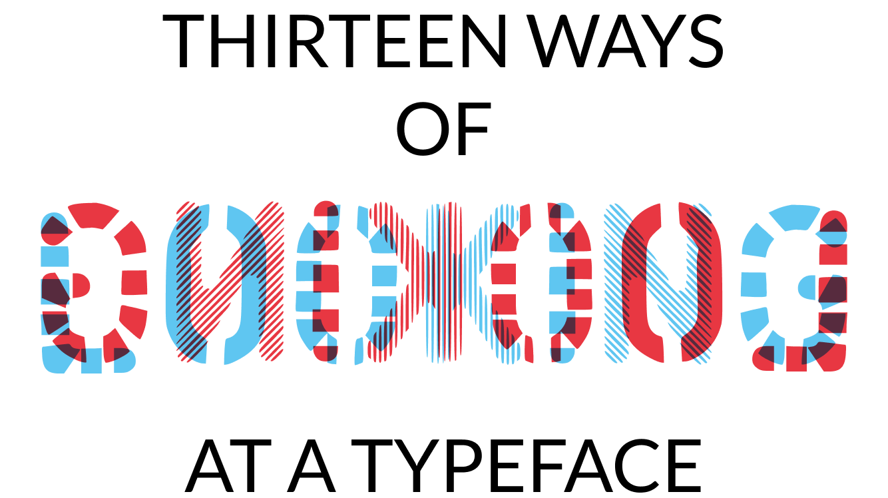
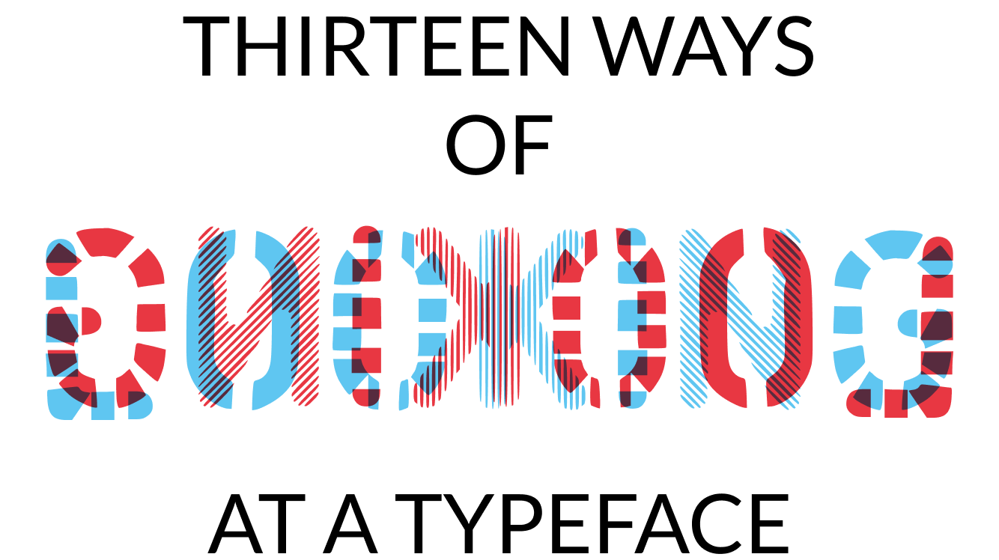

Alta & Baixa is a typographic culture magazine
developed in the academic context and which aims to reflect on all aspects
of typography, including its history, and whose contents are deliberately
eclectic. This is a magazine that aims to publish historical and contemporary,
based on academic and journalistic sources. This means that the magazine must
offer a mix of articles and reference materials and convey the conviction that
the Design choices must be in line with the content.
 

Edition: MDM/FCTUC
Design: Ema Gomes, Jorge Antunes, Natália Magalhães
Circulation: 200 exemplares
Year: 2024
ISBN: